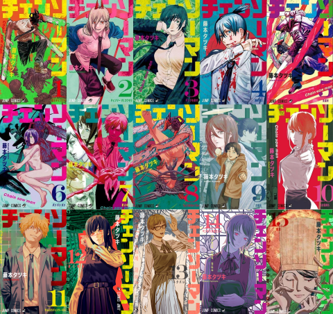

Tomos publicados: 16
Inicio de publicación: 3 de diciembre de 2018
Total capítulos: 158
Adaptación: si |
Portadas Chainsaw Man
|
- 01. Perro y Motosierra (4 de marzo de 2019)
- 02. Motosierra vs. Murciélago (2 de mayo de 2019)
- 03. Matar a Denji (2 de agosto de 2019)
- 04. La pistola es más poderosa (4 de octubre de 2019)
- 05. Menor (4 de enero de 2020)
- 06. Boom Boom Boom (4 de marzo de 2020)
- 07. En un sueño (4 de junio de 2020)
- 08. Super lío (9 de agosto de 2020)
- 09. Baño (4 de noviembre de 2020)
- 10. Sentimientos de un perro (4 de enero de 2021)
- 11. Tú puedes, motosierra (4 de marzo de 2021)
- 12. Ave y Guerra (4 de octubre de 2022)
- 13. Spoiler (4 de enero de 2023)
- 14. Yo quiero ver pingüinos (4 de abril de 2023)
- 15. Entrante (4 de agosto de 2023)
- 16. La dicha de la normalidad (4 de diciembre de 2023)
|

|